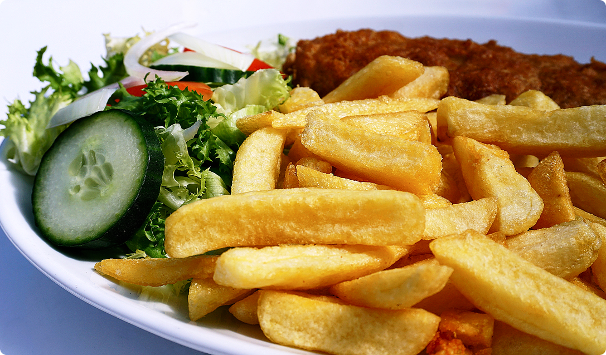

What are the secret ingredients for perfect Italian recipes?
Creating the perfect Italian dish isn't just about following recipes—it's about understanding how to make each component shine. Our chefs have mastered techniques that elevate simple ingredients into extraordinary meals. Here are some insights into how we create our signature dishes:
- Quality basics matter: We only use extra virgin olive oil, fresh garlic, and herbs picked at peak freshness for the foundation of our flavors.
- Pasta water is liquid gold: Always reserve some starchy pasta water to create silky sauces that perfectly coat each pasta strand.
- Slow-cooked sauces: Our tomato sauces simmer for hours, allowing the flavors to develop fully and meld together beautifully.
- Proper salt balance: Each component is seasoned individually, creating layers of flavor rather than just adding salt at the end.
- Fresh herbs timing: Hardy herbs like rosemary cook with the dish, while delicate herbs like basil are added just before serving to preserve their aromatic oils.
What are the top ingredients to make a delicious burger?
The perfect burger combines quality ingredients with proper technique. Our award-winning burgers stand out because of our attention to detail at every step:
- Quality beef blend: We use a proprietary blend of chuck, brisket, and short rib for the perfect fat-to-lean ratio.
- Temperature control: Bringing meat to room temperature before cooking ensures even doneness throughout.
- Minimal handling: Overworking the meat creates tough patties; we gently form our patties without compressing.
- Proper seasoning: We season the exterior generously just before cooking, allowing salt to form a flavorful crust.
- Resting period: Allowing burgers to rest after cooking keeps them juicy and allows flavors to settle.

What are the top ingredients to create a delicious pizza?
A truly exceptional pizza requires balance between crust, sauce, and toppings. Our pizza has developed a cult following because of these techniques:
- Slow-fermented dough: Our pizza dough ferments for 72 hours, developing complex flavors and the perfect texture.
- Simple but perfect sauce: Just San Marzano tomatoes, sea salt, and fresh basil create a bright, clean foundation.
- Quality cheese ratio: Using the right amount of high-moisture, low-moisture, and aged cheeses creates the perfect melt and flavor.
- Hot oven techniques: Our stone ovens reach 800°F, creating that characteristic leopard spotting and light char that defines great pizza.
- Restraint with toppings: We carefully balance toppings to complement, not overwhelm, allowing each element to shine.